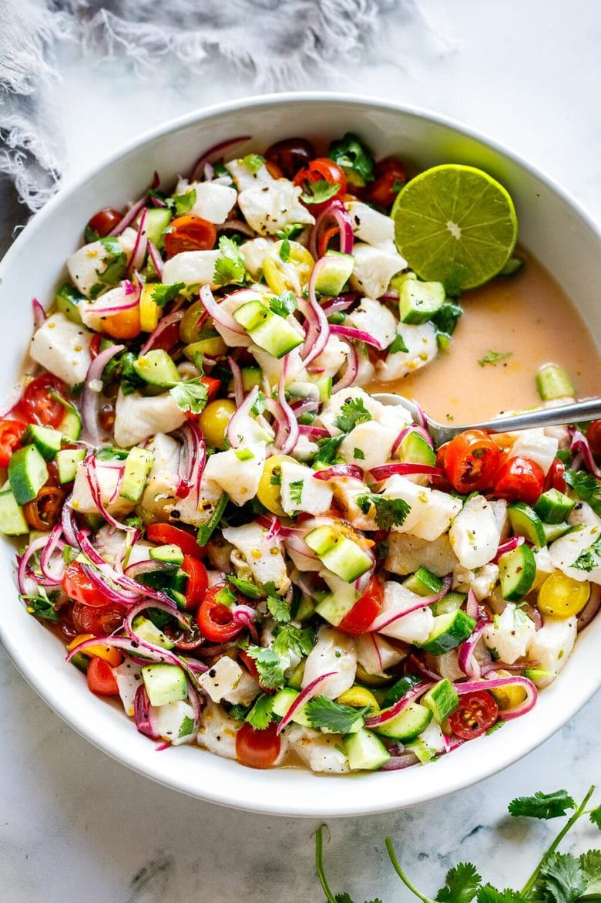

The Best Ceviche Recipe

The easy ceviche recipe is surprisingly very fast and simple to whip up and makes for a tasty, fun appetizer for
parties and gatherings. Plus, it’s low-carb, gluten-free and low-fat – all great things to consider when serving
a crowd. I also love this served over greens or tucked into a tortilla for a light and healthy meal.
Ingredients
- Fresh wild ocean fish (red snapper, tilapia, Corvina, sea bass, mahi-mahi, halibut, dorado, or Shrimp)
- lime juice
- red onion
- tomato
Steps
- Slice the onions and place in a bowl. Add the salt and lime juice and let these marinate while you continue- this
will help remove the bitterness from the onion.
- Cut the fish into 1/2-inch to 3/4-inch cubes and toss them
with the marinating onions.
- Add the remaining ingredients- cucumber, tomatoes and cilantro and give a good
toss. If adding avocado, wait until serving to add it.
- Refrigerate for 45-60 minutes. The longer you let the fish cure in the marinade, t he more “cooked” through the ceviche will become. I find 45 minutes is perfect.